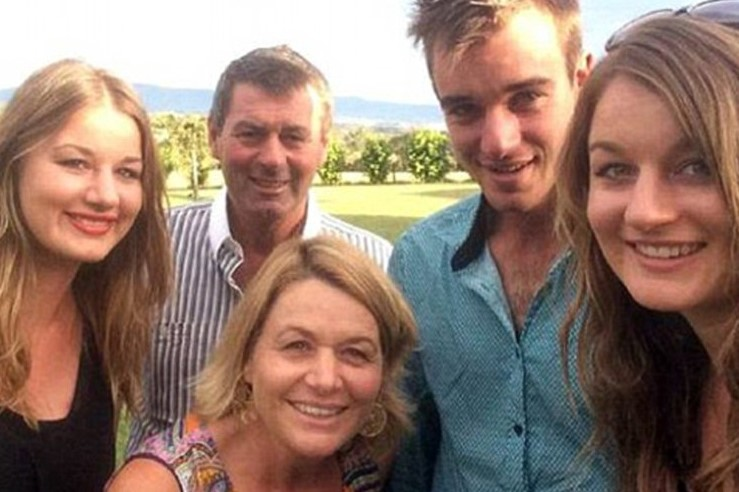

¿A quién no le gusta tomarse un día libre después de una larga semana ardua de trabajo y poder salir con su familia por las planicies, por el parque, o pasear en la ciudad?

El 29 de agosto de 2016, la familia Tromp decidió tomar su vehículo , irse con sus tres hijos y partir a New South Wales. Hasta el 29 de agosto, se puede decir que la familia Tromp era casi modélica. Mark Tromp, de 51 años, y su esposa Jacoba, de 53, se habían establecido con éxito en una granja de grosellas junto a un negocio de tierras en su propiedad en Silvan, en las afueras de la capital victoriana, Melbourne.
Sin embargo, aquel último lunes de agosto todo cambió, y lo cierto es que hoy sigue sin haber una explicación clara. Mark y Jacoba junto a sus tres hijos adultos, Riana, de 29, Mitchell, de 25, y Ella, de 22, huyeron de forma inexplicable.
Cuando los primeros vecinos advirtieron que pasaba algo raro, la policía se personó en la casa de los Tromp. Allí descubrieron que se habían dejado los pasaportes, las tarjetas de crédito y los teléfonos móviles. Incluso las llaves de la casa y la comida para los animales. Lo que fuera que había pasado les hizo huir dejando todo atrás. Parecía claro que habían emprendido un viaje por carretera (se llevaron el Peugeot plateado de Ella) sin posibilidad de que alguien pudiera contactarlos.
Poco después se reveló que Mark y Jacoba habían estado sufriendo algunos episodios de estrés y cierta paranoia. Según los informes de algunos medios, al menos uno de los dos se había convencido de que alguien había salido a matarlos y se había llevado su dinero.
Horas después de comenzar la búsqueda, la policía da con una pista. Al parecer, había un teléfono de los Tromp operativo en el viaje. A diferencia del resto de su familia, Mitchell Tromp llevó su móvil. Más tarde contaría que lo había llevado para asegurarse de que todos estuvieran a salvo, pero que sus padres se volvieron cada vez más raros y difíciles. A unos 30 kilómetros de la casa, le obligaron a arrojarlo por la ventanilla del automóvil. Al parecer, estaban convencidos de que se estaba utilizando para rastrearlos.
La familia condujo un día entero hasta llegar a la ciudad de Bathurst, en Nueva Gales del Sur, a 800 kilómetros de distancia al oeste de Sydney. El martes por la mañana, Mitchell dejó sin dar explicaciones a la familia. Unas horas más tarde, los cuatro Tromps restantes se dirigieron al este a un lugar turístico muy popular, las Cuevas de Jenolan. Allí fueron Riana y Ella quienes decidieron también separarse de sus padres. Además, lo hicieron robando un vehículo y conduciendo a Goulburn, donde informaron que sus padres habían desaparecido.
La historia, extraña y peliculera, comenzó a llamar la atención de medios y un público que no entendía qué demonios estaba ocurriendo con los Tromp. La mayoría se preguntaba cómo una familia aparentemente normal podría haber actuado así, y cómo era posible que sus miembros estuvieran apareciendo por separado sin razón aparente.
En Goulburn, Riana y Ella decidieron separarse en una gasolinera. Al parecer, Ella decía que quería ir a casa para alimentar a sus caballos. De hecho, la chica se convirtió en la primera Tromp en ser localizada cuando llegó a la granja familiar el martes por la noche, encontrando a numerosos policías y prensa. Por su parte, Mitchell llegó a la granja a la mañana siguiente, después de tomar varios trenes.
Si bien Mitchell y Ella parecían no estar demasiado afectados mentalmente, no se podía decir lo mismo de Riana. La joven se había subido a la parte trasera de un vehículo en Goulburn, y allí fue descubierta por el dueño después de haber conducido casi una hora sin saber que llevaba compañía. El tipo le dijo a los medios que se detuvo al oír un ruido y descubrió que Riana estaba en lo que él denominó como “un estado catatónico”, diciendo que no sabía ni su nombre ni dónde estaba.
A Riana se la llevaron al hospital de Goulburn, espacio donde permaneció varios días en cuidado psiquiátrico. La policía dijo en un comunicado que le habían quitado los cargos de robo por el vehículo debido a su salud mental. Ella, sin embargo, sí fue acusada de robo de automóviles.
Lo que comenzó como una loca historia de una familia australiana cruzó el charco. Los medios internacionales comenzaron a hacerse eco de un relato que no tenía ni pies ni cabeza. Además, faltaban por aparecer Mark y Jacoba, los padres de la familia.
Ambos regresaban a Melbourne desde las Cuevas de Jenolan un día después, el miércoles, y a 600 kilómetros al sur en la ciudad de Wangaratta, también decidieron separarse. Jacoba se dirigió hacia el norte otra vez, por medios que todavía hoy son un misterio. A la madre la encontraron al día siguiente a 350 kilómetros de distancia en Yass, vagando en un estado agitado y muy perdida. Como en el caso de su hija, Jacoba fue trasladada a un hospital de la zona y luego se mudó a Goulburn para estar con Riana.
Mark se había quedado en Wangaratta. Después de amenazar a una pareja joven, se le vio huir del Peugeot de Ella. La policía también comenzó a investigar una serie de allanamientos en la ciudad, incluso en un motel, aunque no está claro si estaban relacionados con el patriarca de los Tromp.
De vuelta en Silvan, Mitchell y Ella hicieron aparecieron ante los medios diciendo que estaban desconcertados por el comportamiento “paranoico” de sus padres. “Nunca he visto a nadie así o a nadie que se comporte de esta manera. Realmente quiero que encuentren a mi padre” , dijo Mitchell. “No es peligroso, es mi amigo, mi padre. Lo quiero”.
La última pieza del rompecabezas apareció el sábado por la noche, seis días después del comienzo de todo, cuando a Mark Tromp lo encontraron al lado de una carretera cerca del aeropuerto de Wangaratta. La policía lo interrogó, e incluso fue evaluado por un psiquiatra, pero no encontraron nada raro.
Más tarde publicó una declaración disculpándose por “el dolor y la preocupación causados por estos eventos”. Respetó los recursos de la comunidad dedicados a la ayuda de su familia, mientras el público intentaba darle sentido a lo ocurrido.
Según explicaba un oficial de Silvan, aquello era “el caso más extraño que he visto en 30 años”. El sargento M. Knight, que conocía a la familia, decía que no tenían problemas de salud mental diagnosticados. No había evidencia de drogas, como algunas teorías aparecidas en las redes sociales, y la familia no tenía deudas ni pertenecía a ningún tipo de grupo religioso o secta. Como explicaba el hijo de la familia, Mitchell Tromp, en una rueda de prensa posterior:
“Nunca he visto algo así. Es realmente difícil de explicar o decir algo, pero temían por sus vidas y luego decidieron huir. Fue una acumulación de diferentes eventos cotidianos, normales, solo presión, una presión que fue lentamente empeorando a medida que pasaban los día”.
Por supuesto, cuando todo acabó comenzó el desfile de teorías en los medios. Teorías que las redes sociales alimentaron. La primera de ellas decía que la familia fue envenenada por una especie de toxina en la granja causando delirios extraños.
La segunda teoría más comentada presuponía que la familia estaba involucrada con algo relacionado con una mafia. En un momento dado, planearon huir del país, pero cambiaron de opinión porque creían que sus pasaportes podían rastrearse.
Por último, la tercera de las teorías decía que la familia sufría un tipo de “locura” transitoria colectiva de Folie À Deux, una rara afección psicológica que puede darse en familias muy unidas. El término francés, que significa “locura de dos”, abarca una rara condición psicológica que ocurre casi exclusivamente en personas muy cercanas.
“El sargento Knight, que conocía a la familia, decía que no tenían problemas de salud mental. No había evidencia de drogas, como algunas teorías aparecidas en las redes sociales, y la familia no tenía deudas ni pertenecía a ningún tipo de grupo religioso o secta”.
Un expresión que originalmente fue acuñada para describir a una pareja francesa del siglo XIX que comenzó a mostrar una conducta paranoide y delirante. Si bien los médicos no pudieron determinar cuál de ellos se había vuelto psicótico primero, parecía claro que habían caído en un ciclo donde ambos se reforzaban los delirios mutuos.
Podría ser. De hecho, los medios decían haber hablado con médicos que los trataron revelando que Mark y Jacoba llegaron a mostrar ciertos signos crecientes de estrés mental y que creían que alguien estaba fuera para robar y matarlos.
Sea como fuere, lo único que se sabe con certeza dos años después de los hechos es que una familia entera decidió recorrer más de 1.500 kilómetros en coche por razones que no alcanzan a la razón. La policía simplemente cerró el caso argumentando que lo que fuera que hizo entrar en crisis a los Tromp, pasaba a ser desde ese momento un asunto exclusivamente familiar.